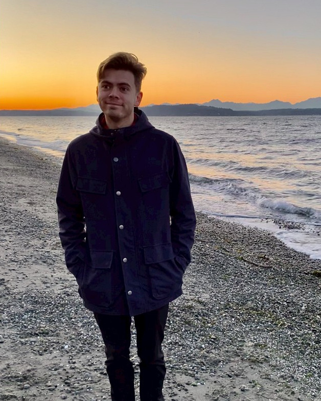
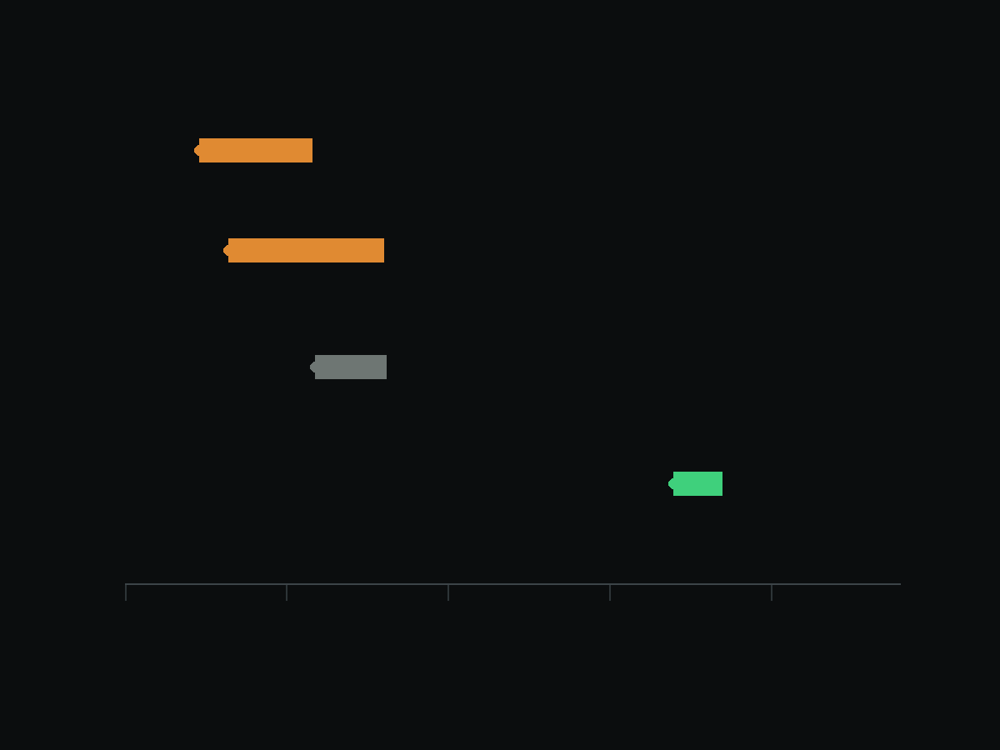

I measure what’s too big to map by hand.
Computer vision for detection and measurement in orbital imagery, where the labels do not exist yet.

I'm a PhD candidate in Earth and Planetary Sciences at the University of Tennessee, Knoxville, working with Dr. Bradley J. Thomson and defending in Spring 2027. After that, I'm headed for applied and research scientist roles in Earth observation, geospatial machine learning, and AI for science.
I came to AI/ML from the planetary geology side. My undergraduate and master's work focused on Antarctic geochemistry, using the McMurdo Dry Valleys as a stand-in for Mars; it was during my Ph.D., and at a NASA AI workshop in 2024, that I saw how these methods could be applied to planetary geoscience problems. So I rebuilt my dissertation around them. I taught myself deep learning by building the detection pipeline that work required, on a problem where the training data didn't exist and had to be made.
Most of what I do sits in the space between a model and a scientific claim: build the pipeline, evaluate it honestly, then defend what its output does and doesn't support. The domain changes but the problem doesn't: scarce labels, a large archive, and a result someone has to stake a decision on. That combination shows up everywhere, which is why a paleobiology group recently brought me in to help apply machine learning to their data, and why a lot of my day-to-day is translating between models and the domain experts who don't build them, or bringing junior contributors up to speed on the technical side.
When the tooling I need doesn't exist, I build it. Labels were the bottleneck on my dissertation, so I built an annotation app to clear it. I've since built a verification layer that holds my AI-assisted work to source-checking and evidence standards, because I'd rather catch my own errors than have a reviewer do it. And I spend real effort deciding whether a problem calls for a model at all. Some of my work has been showing that a question wasn't answerable with the data available, which is a less satisfying result to report and a more useful one to have.
Education
- Ph.D. Earth, Environmental, and Planetary Sciences
University of Tennessee, Knoxville · in progress - M.S. Planetary Geology
University of Hawai'i at Mānoa - B.S. Geology-Biology
Brown University
Eligibility
U.S. citizen, eligible to obtain a security clearance.
Find me


Martian paleoclimate by counting cracks
The way cracks meet in frozen ground can record past climate conditions, but with over 100,000 orbital images to search, reading them by hand is not an option. I built a deep learning pipeline that detects and classifies martian crack junctions, validated on a subset of HiRISE scenes and scaling next to the martian mid-latitudes.
Results in preparation
Training on Earth, deploying on Mars
Can a vision model trained only on Earth imagery find the same landforms on Mars? I trained segmentation models on arctic tundra polygons, inverted channels, and valley networks, then tested them on Mars.

In preparationKnowing a record's limit
Can a Martian dust storm be predicted? Researchers have reported warning signs for decades, yet none has been shown to beat two forecasts that cost nothing: what the season usually brings, and what the storm is already doing. So I asked whether the record holds enough storms to prove that any warning sign works. It does not. Mars has produced only about a dozen independent major storms since we began watching, and I measured how far short of enough that falls.
I audit for leakage before I trust a number. I have found it in my own work twice: once in a train and evaluation split that forced a full rebuild and re-evaluation of an eight-method model stack, and once mid-run, when a check showed a portion of rows were reading atmospheric data from after the event being predicted. That run was killed before any result was read, so the fix and the added robustness tests are provably not post hoc.
Where the design allows it, I pre-register. Methods and decision thresholds are committed to version control before the run they govern, so the commit history itself is the evidence that nothing was decided after seeing the numbers. I run power analysis before I model, so I know what effect size a study of a given design could detect at all.
I verify changes instead of assuming them. When I replaced a full-image decode with a windowed read, I wrote a parity test proving the new path produced identical output before merging it. A model that ships in my pipeline carries a provenance record with its training row counts and a numerical parity check. I report error bars, and I state limitations alongside results here and in my papers.
I build and train detection and segmentation models, including writing architectures and loss functions from scratch when the standard ones fail on badly imbalanced data.
PyTorch · U-Net and U-Net++ · Mask R-CNN (Detectron2) · SAM · DINOv3
I design the evaluation before the model, and I verify a result before I trust it.
scikit-learn · XGBoost · nested and grouped cross-validation · probability calibration · power analysis · leakage detection
I work with large orbital image archives, streaming and processing them in place instead of downloading them whole.
rasterio and Cloud-Optimized GeoTIFF · NASA PDS STAC · scikit-image · HiRISE and CTX
I take pipelines off a laptop and onto a GPU fleet, with cost controls that survive an unattended run.
AWS Batch GPU Spot · Docker (multi-stage CUDA) · GCP Vertex AI · S3 · Optuna
REPLACE: one plain-language sentence saying what the paper found.
We trained a vision model on Earth landforms and carried it to Mars, applying terrestrial analogy digitally to constrain how these features formed and what they record about past climate.